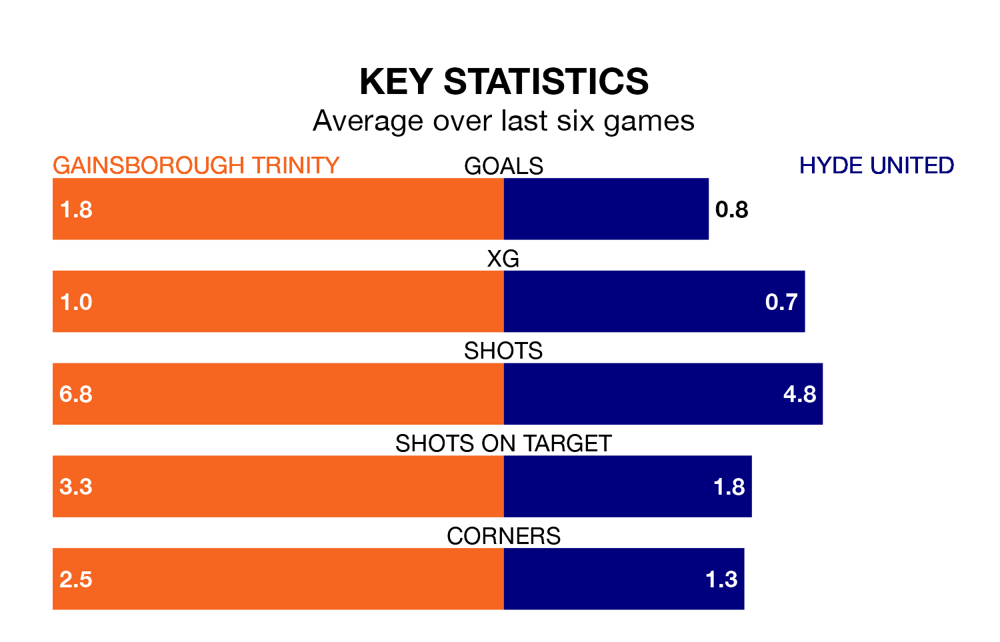

Hyde United travel to Gainsborough Trinity on Saturday in the Northern Premier League.
The visitors come into the game on the back of a win in their last match, having beaten United of Manchester 2-1 at home.
The Blues, meanwhile, lost their last match, 2-1 against Lancaster City.
With 54 goals in 37 games so far this season, Gainsborough Trinity are scoring at below the league average rate with 1.5 goals per game. And they are conceding at an average rate, letting in 60 goals at a rate of 1.6 per game.
Hyde, meanwhile, are above average scorers, with 1.7 goals per game, compared to a league average of 1.6. They have conceded 1.1 goals per game.
In the last 10 years, Gainsborough Trinity and Hyde have played each other on 11 occasions. Gainsborough Trinity won four of them, Hyde two, and they drew five times.
On average, the Blues scored 1.5 goals and Hyde 1.1 in those matches.
Their last meeting was on November 28, when they played out a 2-2 draw.
United are fifth in the table after 39 games, of which they have won 19 and drawn 10, earning 67 points.
The Blues are seven places behind the visitors in 12th, with 16 wins and five draws putting them on 53 points.
The home side are in reasonable form in the Northern Premier League, with four wins and two losses from their last six games.
With two wins and two draws over that period, Hyde's form is worse – they have taken eight points from 18, compared to Gainsborough Trinity's 12.
Updated: 10:01 (UTC), 12/04/24